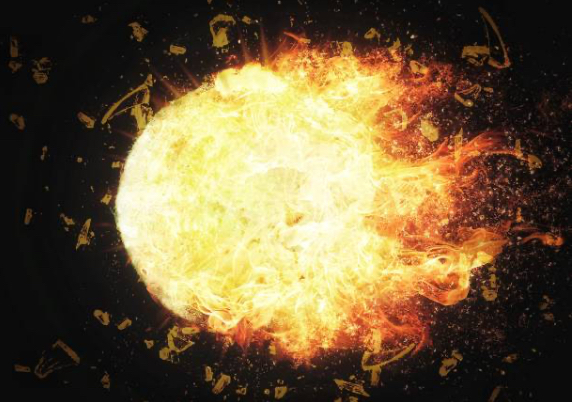
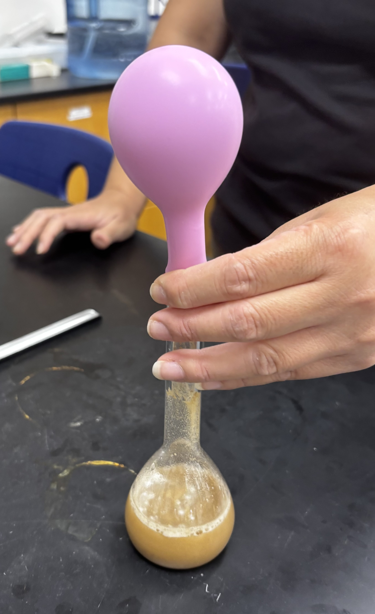
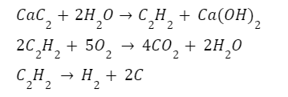
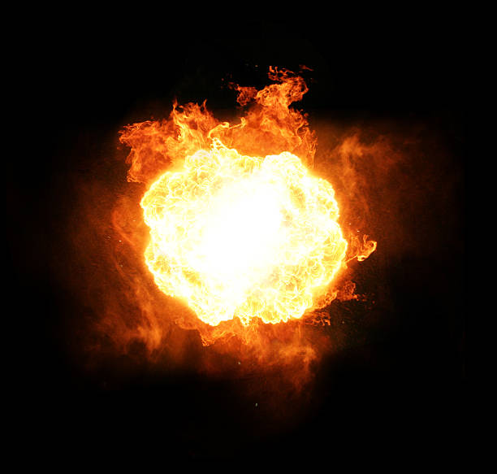

Just a sprinkle of calcium carbide and water prepares for a grand explosion. Don’t blink when the gaseous product gets lighten up; it can be a powerful and spectacular scene, just like in the movies! This is the definition of chemistry on fire.

Background Information
Calcium carbide is a grey, chunky ionic solid commonly in industrial applications. One of its uses include removal of water moisture, while its main purpose is for the production of acetylene gas.
Acetylene is a flammable gas that can be easily combusted under relatively low temperature. Through combustion, acetylene gas releases energy in the form of heat, making it an exothermic reaction.
Purpose
The objective of the experiment is to explore gas evolution and combustion by producing acetylene gas from calcium carbide.
Materials
Volumetric/Erlenmeyer flask
Bunsen burner/lighter
Solids: CaC2
Water
Safety Note
Wear lab safety googles as some chemicals may splash.
Be careful when handling the matches or lighters. Don’t burn yourself.
Procedure
Measure 4g of powdered and 4-5 chunks of CaC2
Transfer the CaC2 into the balloon using a plastic funnel
Measure 50 mL of water in a graduated cylinder
Pour measured water into a volumetric flask
Attach the balloon to the opening of the flask and mix CaC2 with water
Hold the balloon and swirl the flask slowly until no more bubbles are observed
Tie the balloon tightly to make sure no gas leaks
Place the balloon on Bunsen Burner flame using crucible tongs
Explosion!

How Does This Work?
Calcium Carbide reacts with water to create acetylene, which is an unstable gas due to the carbon-carbon triple bond. At high temperature, acetylene molecules move faster with greater kinetic energy. Therefore, acetylene decomposes into hydrogen gas (H2) and carbon, releasing a large amount of energy. In addition, acetylene also reacts with oxygen gas (O2) during combustion to form carbon dioxide (CO2) and water vapor (H2O), creating an explosion!
Since the reaction happens rapidly, the flame cannot expand in time to create a fire, resulting in a “fireball�

Further Exploration
You can also try using different reactants to create a similar explosive effect! For example, try adding combustible gases, like butane and methane, to the balloons. They will also form similar gaseous products that cause the explosion.
However, be careful with experimentation!

Acknowledgements
Experimentation was conducted with my school’s chemistry club.